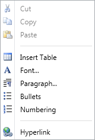

RichTextBoxAdv supports a context menu similar to MS Word. It supports the following list of features in its context menu:
1. Cut
2. Copy
3. Paste
4. Insert Table
5. Font
6. Paragraph
7. Bullets
8. Numbering
9. Hyperlink

Figure 917: Context Menu